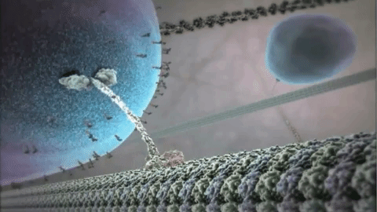

Visualización científica como instrumento para la enseñanza de la ciencia


Esquema
- Introducción
- ¿Qué es la visualización científica?
- Cómo funciona en el aula
- No todo es color de rosa
- Comentarios finales
Visualización científica
Es una disciplina que surge a partir de los avances en la capacidad de producción de imágenes dinámicas que se emplean para trabajar con grandes bases de datos.
Visualización científica
Se considera que nace con un reporte de 1988 en el que los autores afirmaban que:
The goal of visualization is to leverage existing scientific methods by providing new scientific insight through visual methods.
McCormick, DeFanti, and Brown (1988)
Visualización científica
Hamming (1962) “The purpose of computing is insight, not numbers”.
El propósito de la visualización es el insight, no las imágenes
Visualización científica
Características distintivas:
- Producción de imágenes dinámicas.
- Datos provenientes de múltiples fuentes.
- (Simulaciones, instrumentos, experimentos, bases de datos)
- Interactividad
Visualización científica
Gran parte de la bibliografía se ha centrado en la producción de cualquier recurso gráfico.
Sin embargo, aquí queremos hacer foco en SciViz.
Aspectos relevantes de la visualización
Ilcic & Reynoso (2018):
- Interdisciplinar
- Cumple un rol fundamental en la producción del conocimiento científico >
¿Visualización en educación?
¿Por qué no?
McCormick 1988:
A major educational reform must take place on two fronts: Visualization technologies must exist and be used by tool makers and tool users.
Computer scientists must have access to visualization technology, and computational scientists must learn to think visually.
Gordin and Pea (1995):
The scientific community's increasing use of SciViz in itself compels the attention of the education community because a major function of education is to prepare students with the skills and tools that professional fields employ.
Instead, scientists and science educators must lead students to acqufre the practices of the tools they use to pursue their craft of finding and forging descriptive patterns that reveal (or can come to signify) order amidst the seeming chaos of phenomena.
Vavra, Karen L, Vera Janjic-Watrich, Karen Loerke, Linda M Phillips, Stephen P Norris, and John Macnab. 2011
¿Qué podria aportar en la educación?
Factores a tener en cuenta
- Nivel:
- Inicial, secundario, universitario
- Infraestructura
- Background knowledge de la comunidad
Aportes:
Dos estudios de casos:
- Chaudhury et al. (2015)
- Vavra et al. (2011)
Chaudhury et al. (2015)
Como se usaron visualizaciones en cursos de física, química, biología y neurociencias.
Física (nivel medio)
Relación fundamental entre los gráficos de moovimientos y el estudio de la cinemática
Biología

Chaudhury et al. (2015)
As novices, students need explicit instruction in interpreting and utilizing these animations, videos, or even the diagrams that accompany a text. (p. 193)
Comentarios finales
Vavra et al. (2011)
The consensus in the research has been that “visualization objects assist in explaining, developing, and learning concepts in the field of science” (Phillips, Norris and Macnab 2010, 63).
These studies show that a significant attribute of dynamic media is its ability to stimulate student interest and engagement. However, it remains unclear whether dynamic media enhances the learning and understanding of science concepts.
By and large, the research on animations, visualizations and conceptual change indicates that visualizations are not effective in isolation
Comentarios finales
- Herramienta muy poderosa
- Debe ser aplicada con cuidado para poder ser aprovechada
¡Muchas gracias!
✉ julianreynoso@unc.edu.ar
Presentación: http://errejulian.github.io/edsciviz
Referencias 1/2
Chaudhury, S. Raj, Lynn Mandeltort, Amy B. Mulnix, Eleanor V.H. Vandegrift, and Jennifer R. Yates. 2015. Using Scientific Visualization to Enhance the Teaching and Learning of Core Concepts. In Essentials of Teaching and Integrating Visual and Media Literacy, edited by Danilo M. Baylen and Adriana D’Alba, 185–202. Cham: Springer International Publishing.
Gordin, Douglas N., and Roy D. Pea. 1995. Prospects for Scientific Visualization as an Educational Technology. Journal of the Learning Sciences 4 (3): 249–79.
Hamming, R. W. 1962. Numerical Methods for Scientists and Engineers. 2nd ed. New York: Dover.
Ilcic, A. A., & Reynoso, J. (2018). Hacia una articulación de modelos: el caso de big data. En S. Chibeni, L. Zaterka, J. Ahumada, & D. Letzen (Eds.), Filosofía e Historia de la Ciencia en el Cono Sur (pp. 181-192). Córdoba, Argentina: Editorial de la Universidad Nacional de Córdoba.
McCormick, Bruce H., Thomas A. DeFanti, and Maxine D. Brown. 1988. Visualization in Scientific Computing.
Referencias (2/2)
Vavra, Karen L, Vera Janjic-Watrich, Karen Loerke, Linda M Phillips, Stephen P Norris, and John Macnab. 2011. “Visualization in Science Education.” Alberta Science Education Journal 41 (1): 22–30.